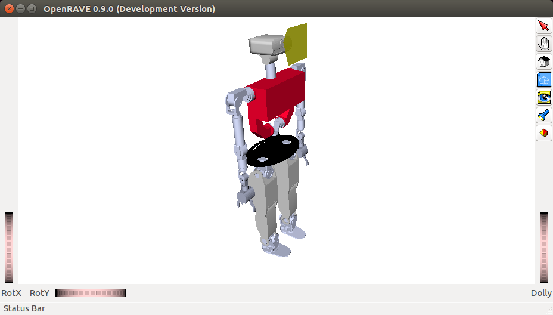
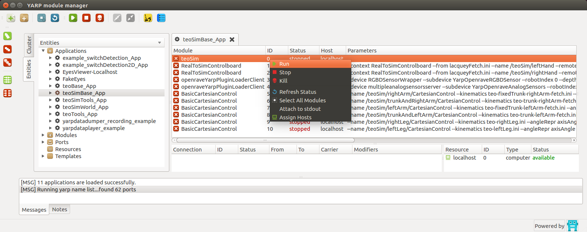
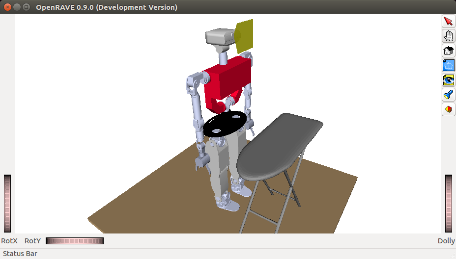

Tutorial
Where should I start?
Read the Introduction section of the Developer manual: Developer Manual (Introduction)
Minimum installation for simulator
As a bare minimum to try the simulator, install the following (note: there is a shortcut via the superbuild https://github.com/roboticslab-uc3m/teo-main but let's follow this minimalistic procedure instead), each with their own dependencies:
- https://github.com/roboticslab-uc3m/openrave-yarp-plugins
- https://github.com/roboticslab-uc3m/teo-openrave-models
- https://github.com/roboticslab-uc3m/teo-configuration-files
- https://github.com/roboticslab-uc3m/tools
Now what can I do?
Now that you have installed the basic TEO simulator, you're probably wondering what to do.
Initializing the communication server
Our current implementation uses YARP for communication. Basic use of YARP requires the use of a centralized server. This server associates the low-level implementation of the communication ports with the names we give them. Before executing any TEO program or application, please launch a YARP server from a terminal:
yarp server
Launching the simulator through the terminal
Maintaining the YARP server open, launch the simulator from another terminal:
teoSim
You should get a window similar to the one depicted below.

Note that the setup with Dextra hands is via the teoSim dextra alternative command.
Launching the simulator through the YARP application manager
It turns out to be much more practical to launch everything through the YARP application manager.
Close the teoSim window, and instead launch the following from the terminal:
yarpmanager --from applications
You should get a window similar to the one depicted below. Navigate through Applications > teoSimBase_App > right-click on teoSim > Run

Activating emulation of underactuated hands
In the YARP application manager instance, navigate through Applications > teoSimBase_App:
- Right-click on first
RealToSimControlboard>Run - Right-click on second
RealToSimControlboard>Run
You will see no action, but it will provide ports the robot hands that are more similar to the real ones.
Spawning objects in the simulated environment
In the YARP application manager instance, navigate through Applications > teoSimWorld_App > right-click on any openraveYarpWorldClientFile > Run
Activating floor and ironing_table, you should get a window similar to the one depicted below.

Note that you can directly interface with the world port. While this is considered a bad practice, it is documented at: roboticslab-uc3m/openrave-yarp-plugins/libraries/OpenravePlugins/OpenraveYarpWorld
Interfacing with the robot
Great news! Interfacing with the robot in simulation will be exactly the same as with the real robot! 2x1! Yay! It in fact shares common interfaces with all YARP-speaking robots! Nx1!!
Essentially, we can interact with the robot:
- Directly talking to ports. This is considered a bad practice when APIs are available, but use cases include: fumbling around on a day just like today, speaking with a port with no API (e.g. no client network wrapper), debugging, or just plain laziness. Our own set of hacks (it's hackish because protocols may be subject to change) can be found at: yarp-tricks (from developer-manual)
- Via GUI. In certain cases, we have GUIs!
- Best practice: Within our programs and scripts, using the APIs provided by YARP. They are available in many programming languages (C++, Python, MATLAB...). Our own set of examples can be found at: examples (from yarp-devices)
Next, continue to the dedicated sections: